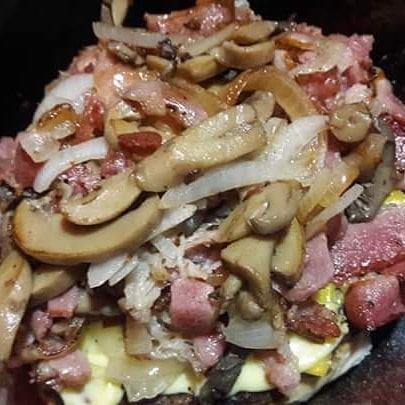

¡ESPECIAL DEL DIA DE HOY!
Disfruta del poderoso Hate de Los Cabos con camarón de Los Cabos
INGREDIENTES:
Camarón cabeño que no rapiña durante huracanes
Pan chametleño bien bueno
Machin crema pa que amarre
Salchicha longmont
Tocino bien perrón
Verdura exportada de los ranchos del valle
Galeria express de imagenes
